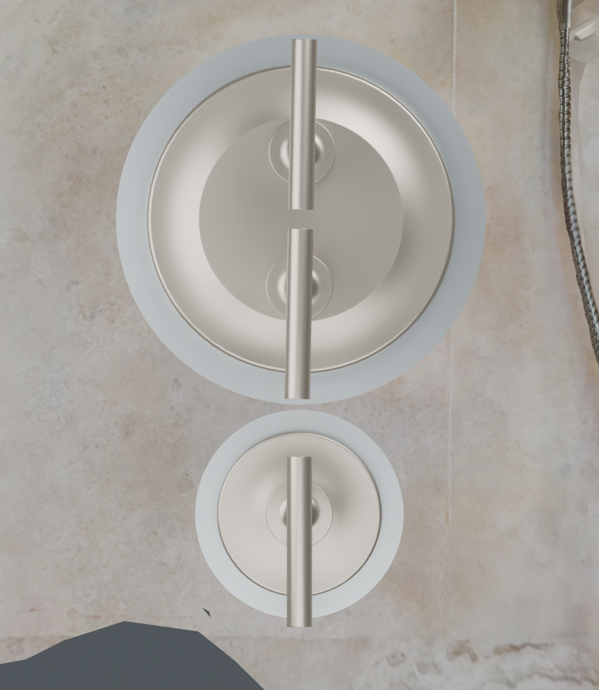
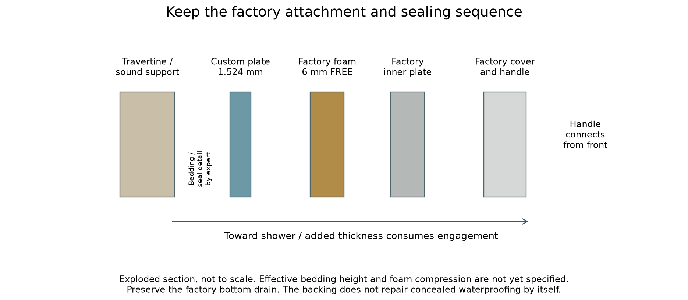
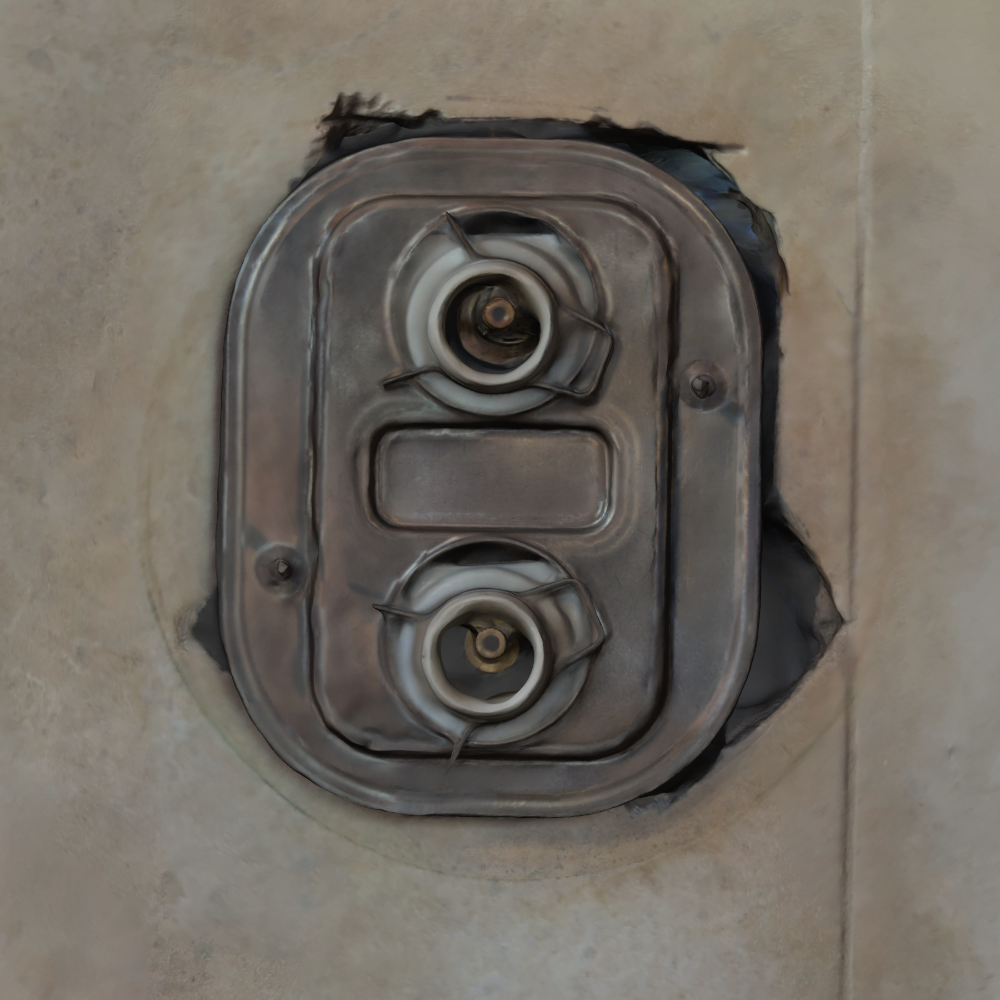
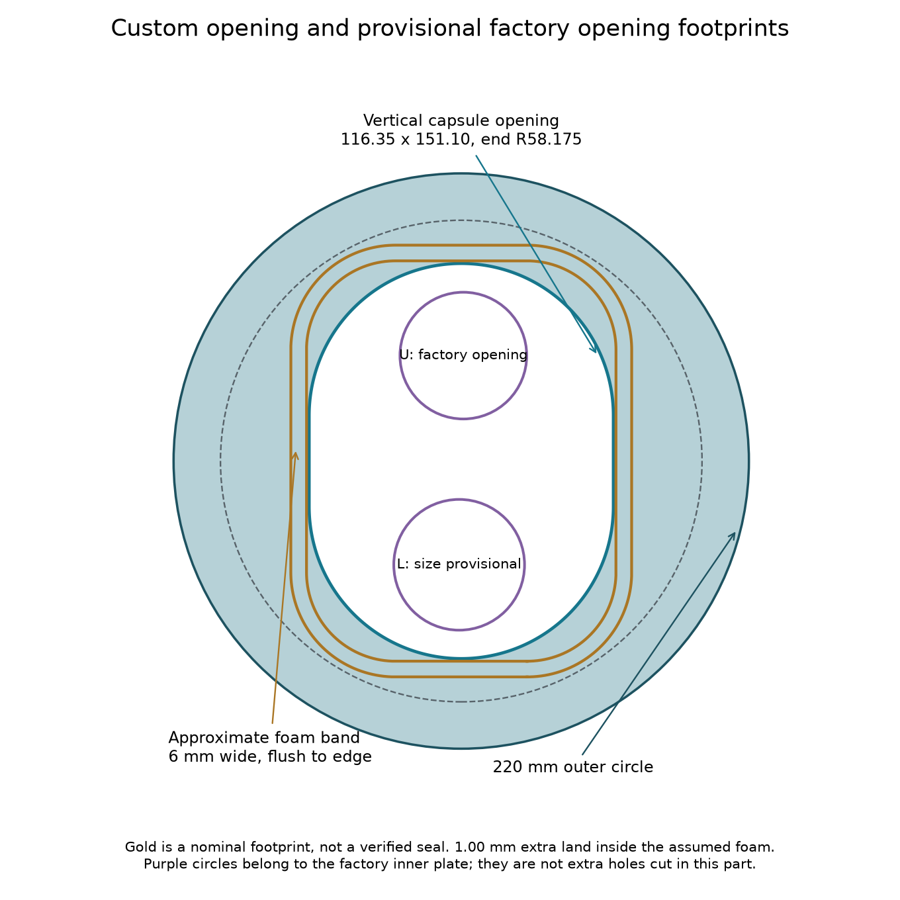

FT01 · 15 OCTOBER 2026 · QUOTE AND DRY FIT
A useful part for the Kohler visit
Price the 1.524 mm stainless pair first, alongside the matching plastic print. If the finished, delivered metal pair costs no more than about twice the plastic pair and arrives in time, using metal as the first fit trial is reasonable. Accept that an unsuccessful trial may require a remake. Otherwise get the plastic pair promptly. This gets a real part to the Kohler visit without claiming the installation is already solved.
Recommended: main Ø220 / diverter Ø124, a broad vertical capsule opening, 1.524 mm first metal stock, and no integral bolt tabs.
Permanent installation remains subject to the real handle, gasket, support and water checks. You can price and make a sacrificial fit trial now.
Upload these two parts
Metal: use STEP or DXF, millimeters, quantity one each, 0.060 inch stainless. Printing: use STL in millimeters. T1524 is 1.524 mm thick. The DXF contains only the two cutting contours.
Fallback and alternate files
If the pair is too close on the wall, replace only the diverter with the 120 mm fallback: STEP / DXF / STL
Do not order every alternative. The 3 mm trial changes depth by +1.476 mm relative to the metal.
One practical next step
Make a fit trial of two simple backing plates. Retain the Kohler inner plate, foam, cover, adapters and handles.

Proposed appearance on the scanned travertine. Kohler exterior forms are from official CAD; finish, installed depth and successful assembly are not established by this rendering.Recommended pair
Main: 220 mm outside diameter with a centered upright capsule opening, 116.35 x 151.10 mm, semicircular ends R58.175. Diverter: 124 mm outside diameter with a 80 mm opening. Both are flat. Start with 1.524 mm (0.060 inch) stock. Keep the 120 mm diverter fallback if the real gap is too tight.
What to buy
One main and one diverter, one thickness. Quote 316 stainless with deburring and directional graining; compare 304 brushed stock if it is cheaper or faster. Plastic is a dry-fit tool. A stainless trial can become the installed part only after the field checks pass. No order or upload has been made.
Bring to the appointment
This guide, the prototype pair, the actual loose Kohler parts and any adapters/screws already on hand. The expert's first job is to prove the factory handles connect and work, then test the added plate and establish the support/sealing detail. No additional measuring campaign is required before pricing these files.
How this repair is supposed to work
The new metal bridges the visible over-cut and provides a possible landing for the original foam. It is not a replacement valve trim or a complete concealed waterproofing repair.

Layer order only. The new support/bedding height and compressed foam thickness must be established on site.Handle access
The handles attach from the shower side; their entire bodies are not pushed through the new backing. The upright opening surrounds both factory connection openings and both rods. It leaves at least 10.86 mm extra space beyond the modeled upper and lower opening circles. That compares projected outlines, not hidden adapter engagement. No extra bolt holes are put in the decorative cover.
Support and water path
The existing foam belongs to the inner plate and meets its outside edge. Its full rear footprint needs firm, continuous contact. The new plate-to-stone interface needs a compatible, continuous sealing detail, while the original cover's bottom drain remains open. Covering a saw cut cosmetically does not make its substrate waterproof. Sound support, sealed interfaces and concealed waterproofing continuity are separate checks.
Keep the added depth small
Added height equals actual backing thickness plus effective support/bedding height. That can reduce handle engagement even when the opening is generous. The 15.44 mm loose inner-plate depth includes about 6 mm of uncompressed foam; it is not a permitted spacer allowance. A 3 mm acrylic trial adds 1.476 mm more than the 1.524 mm metal design.
Kohler reference
Kohler's older guide calls for the inner assembly to sit flat with its seal over the opening, the cover drain downward, and an appropriate adapter if engagement or cover tightening fails. The expert must confirm the applicable hardware revision. See 1041504-2-F, printed pages 3-8.
Official source
What the evidence actually establishes
Physical caliper readings control the loose parts. Scans locate the installation approximately; neither reflection-distorted metal nor a low model residual establishes a machining tolerance.

New attached-inner-plate capture, viewed normal to a fitted wall plane. The visible stems sit high within the hub rings; their true 3D axes and engagement are not resolved.Reliable inputs
Inner envelope 130.35 x 165.10 mm; upper opening 48.46 mm; top rim to upper opening 18 mm; foam approximately 6 mm wide and 6 mm free depth; complete free depth 15.44 mm. Main decorative cover diameter 184.15 mm. Original photos and ZIPs are preserved. Models: K-T14489-4-BN / K-2973-KS-NA, and K-T14491-4-BN / K-737-K-NA.
Direct current observation
The new scan shows the inner plate attached, with hubs surrounding the stems. Approximate projected stem-to-ring offsets are 3-4 mm vertically. Its width check is about 134.5 mm against a real 130.35 mm caliper reading, so this capture is not a precision jig. No parts were moved or stretched to hide the discrepancy. The expert must distinguish plate pose, hub/adapter arrangement, valve tilt and scan error by fitting the real handles.
Depth and measurements
The six installed distances are 3D tip-to-tip readings: U-L 80; NE-SW 109.8; U-NE 51.4; L-NE 80.25; U-SW 81.14; L-SW 54.7 mm. They are not wall-plane hole coordinates. The reported 106.39 mm inner-plate mounting gap was between nearest hole edges, not centers. Do not use either set as a drill pattern.
What remains a scenario
Inner corner R40, lower opening diameter/position, diverter rear footprint, actual cover centers, compressed foam, hidden engagement and structural support remain unresolved. FT01 uses these openly for a fit trial. The new scan does not establish a successful seal or a factory trim fit.
Use the expert's visit efficiently
Check attachment before sealing. A part that looks centered but binds, fails to engage, rocks or leaves the foam unsupported does not pass.

Broad upright access, no fixed bolt tabs. Gold is the assumed edge-flush foam footprint; the 1.00 mm extra land is a narrow design margin, not a verified tolerance.1. Establish the factory fit
Inspect the actual inner hubs, adapters, screws and both handles together. Confirm the handles engage and operate through their intended range without side-load, binding or forcing the plate into position. Check temperature limiting and function using the applicable Kohler procedure. If the factory assembly itself cannot fit, resolve that before using a custom plate to conceal the problem.
2. Correct rod obstruction
The owner confirms the nominal 4.56 inch rods touch wood. They are trim studs, not wood anchors. The published maximum front projection is 7/16 inch (11.11 mm) from the original finished wall. Confirm datum/applicability with the expert; do not automatically add the new plate thickness. Wood clearance behind the rods is the owner's preferred conditional remedy if the rest of the valve/handle depth is acceptable. Inspect the member, piping and cable before any drilling; no hole diameter or depth is prescribed here. No tile modification is authorized.
3. Trial the complete stack
Remove the inner plate, slide on the custom backing without force, then reinstall all factory parts. Center the backing on the real cover and check four equal visible borders. Verify full foam contact, no metal interference, free operation, suitable engagement, cover seating, service removal and no backing movement under normal operation. No added nut or tab may bear on the decorative cover.
4. Resolve support and sealing
Check both plates together; aim for at least 3 mm clear gap as a project handling preference. Use the 120 mm diverter if necessary. Confirm its 80 mm aperture clears hardware while retaining the factory rear seal/contact footprint. Specify sound support beneath clamp/seal zones and a stone-compatible nonstaining sealing system. Do not pull thin metal across a void with the nuts. Record the repair detail, cure requirements and drain path before final installation.
Price a real file, then choose the route
Use delivered totals including finish, rush, shipping and tax. These planning allowances are not vendor quotes; current CAD upload results decide.
Upload sequence
For metal upload the MAIN 220 and DIV 124 T1524 STEP files (or their DXFs), quantity one each, millimeters, stainless 0.060 inch. Check the preview says 220 / 124 mm and select deburring plus grain finishing or protected brushed stock. For printing upload the matching T1524 STLs, millimeters, flat on bed, solid PETG/PLA for dry fit. If the printer recommends 3 mm to control warping, use T3000, record the thickness change and do not scale the model. For clear acrylic use the DXFs and explicitly select 3 mm stock.
Decision at the quoted price
Prefer metal as the first trial when its finished delivered total is at most about 2x plastic and its arrival meets the appointment. This avoids paying twice for a geometry that may work. Choose plastic when metal finishing is costly, timing is worse, or the cost of remaking metal is unwelcome. A cheap local clear acrylic cut may be more useful than an opaque print for seeing contact. No metal 3D printing is needed for these flat profiles.
Finish request
Request smooth deburred inside and outside edges, removal of cutting tabs and heat tint, a consistent directional satin grain on both visible faces, protected shipping, and actual thickness/flatness confirmation. Raw or merely deburred stainless is not necessarily a finished decorative surface. Stainless brushing is not an exact Kohler Vibrant Brushed Nickel color match.
What to send
The quote ZIP contains custom CAD, shop drawings, shop notes and hashes only. Send those to a fabricator; the full field guide and scans contain installation photographs and are for the owner/expert. Choose one diverter size and one thickness. The fallback and 3 mm files are alternatives, not extra parts to order by default.
Fit, release and future upkeep
FT01 is the current quote and fit-trial recommendation. Previous experimental variants remain archived evidence, not competing instructions for this next order.
Before permanent installation
Record the part revision, material, measured thickness, selected diverter diameter, expert and date. The complete real assembly must pass attachment, operation, plate seating, full gasket support, retention, drainage and removal checks. Document the final stone repair/support, sealant/primer, concealed waterproofing assessment and water-exposure cure time. Only then release the selected part for permanent service.
Water verification
After the specified cure, test plumbing pressure/leaks separately from shower spray around the trim. Observe the accessible rear cavity and relevant joints for ingress. Verify bottom drainage and recheck after use. The installer determines the test procedure and acceptance. A render, covered over-cut or dry-fit pass is not a water test.
If the prototype fails
Mark the contact or missing landing directly on the prototype and photograph it with the real factory parts. Preserve measured data and change one reasoned dimension at a time. Do not enlarge the opening until the gasket landing is checked. Do not move just the factory plate in CAD while leaving the backing fixed. Fixed tabs may be reconsidered after actual stud axes, seats and engagement are established; they would need their own insertion and bearing check.
Maintain one current source
The dimension master is canon/fit_trial_design.json, read by src/fabrication/fit_trial.py. The attached scan assessment remains separate from the original wall transform. The main project uses millimeters: X right, Y up, Z toward the shower. Regenerate and check CAD, drawings and models together after a revision. Record actual field results in docs/physical_checks; never mark a check complete because a drawing was updated.
Decision record for the visit
Expert / date: __________________________ Part revision: __________
Factory handle fit: __________ Stud remedy: ______________________
Actual added stack / adapters: __________________________________
Main foam contact / diverter footprint: ____________________________
Gap / retention / support detail: _________________________________
Seal system / cure / drain: _____________________________________
Owner acceptance / final water test record: ________________________
Why these sizes and this opening?
The capsule keeps more metal under uncertain rounded corners than the earlier R33 opening, while clearing all 51,929 scoped captured triangle pieces in each of 3 earlier placement scenarios. The closest calculated hardware gap is about 1.61 mm before unbounded scan and placement errors. The nominal extra foam land is only 1.00 mm. These small margins are reasons to trial the actual parts, not to invent a large machining tolerance.
The newly attached scan is direct evidence of the real plate/hub relationship, but its metal width disagrees with the caliper by about 4 mm. It does not supply a reliable bolt-jig pattern. Fixed tabs are omitted to preserve adjustable centering and avoid new insertion/engagement conflicts.